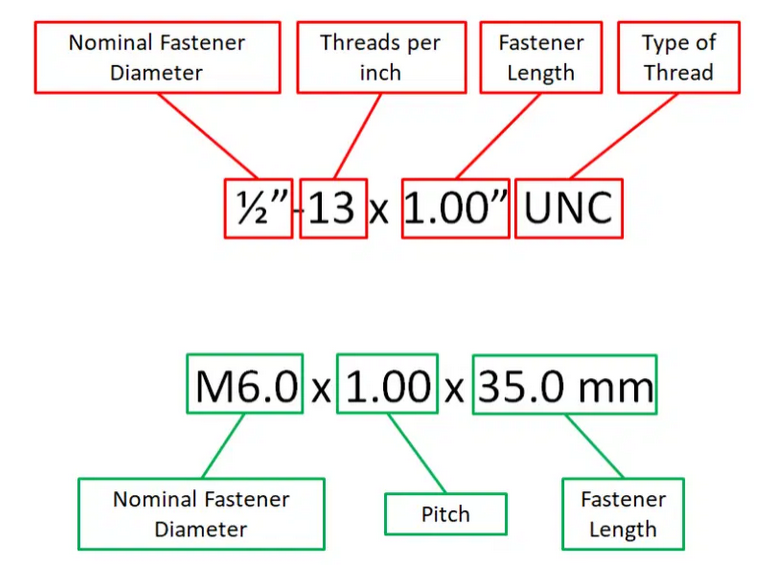
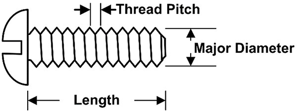
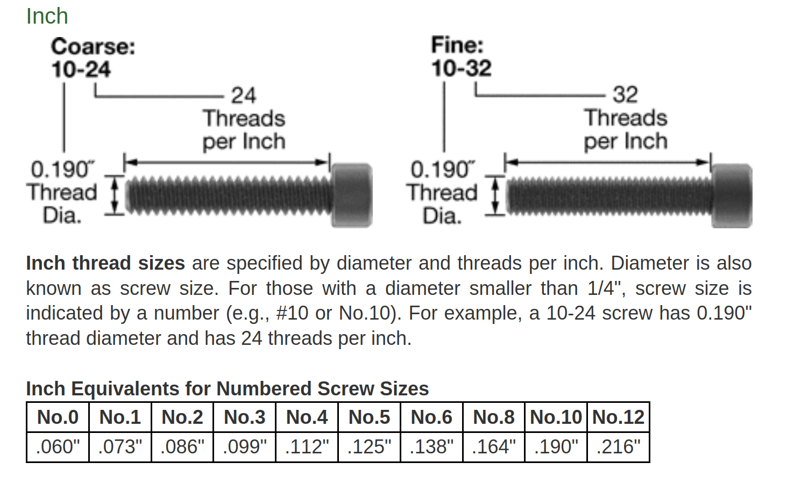
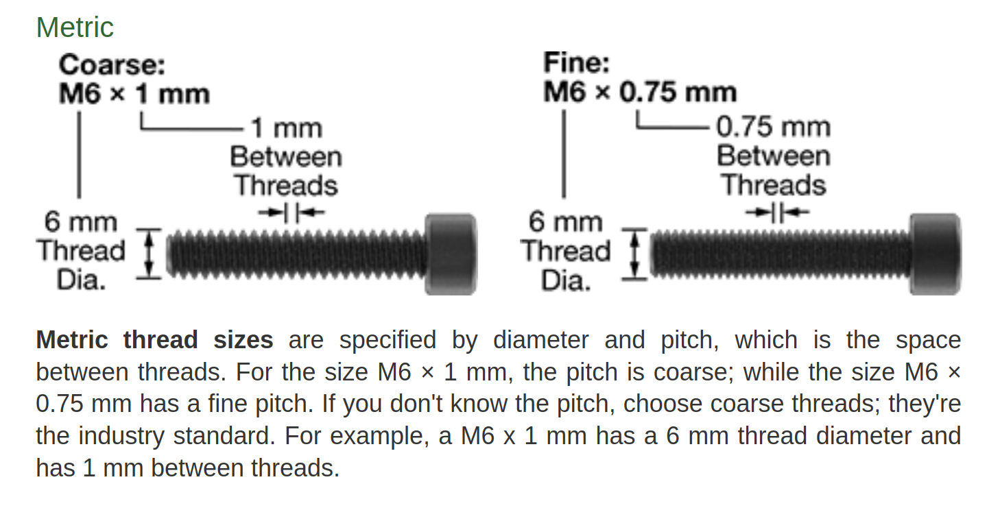
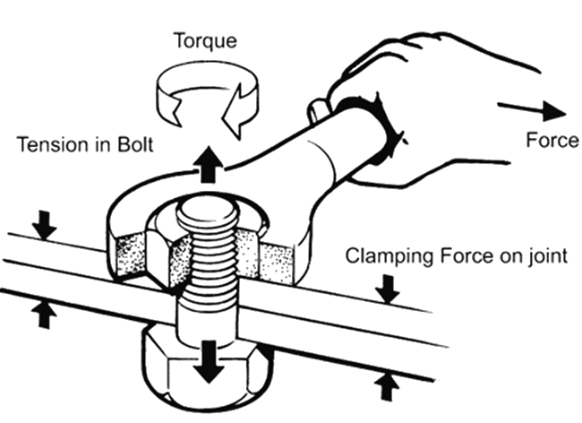
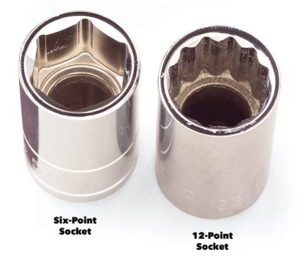
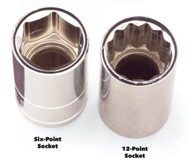
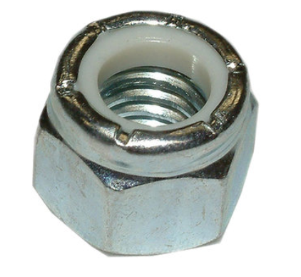

The Nuts & Bolts of Screws
1. How screw sizes are designated: Imperial and Metric

2. How to measure screw sizes: Imperial and Metric

- From McMaster-Carr

Handy Tip: SCREW_NUMBER_SIZE x 0.013" + 0.060" = SCREW_DIAMETER

3. How Torque Works:

Chart showing proper torque for various screw sizes
4. Screw Head styles and their drivers:

Hex head
 

5. Specialty hardware:
Nyloc Nuts - Stay in place without needing to be tightened
